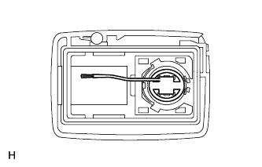

ПЕРЕДАТЧИК СИСТЕМЫ УПРАВЛЕНИЯ ЗАМКАМИ ДВЕРЕЙ (для моделей с системой посадки и запуска) > ПРОВЕРКА |
| 1. ПРОВЕРЬТЕ БАТАРЕЮ ПЕРЕДАТЧИКА |
Проверьте работу передатчика.
Извлеките батарею (литиевую батарею) из передатчика (Нажмите здесь).
 |
Установите новую или заведомо исправную батарею (литиевую батарею).
С расстояния около 1 м (3,28 фута) от наружной ручки двери со стороны водителя проверьте передатчик, направив ключ на автомобиль и нажав на кнопку передатчика, или коснитесь передатчиком внутренней части ручки и потяните за нее.
|  |
Проверьте заряд батареи.
Извлеките батарею из неработающего передатчика электронного ключа (Нажмите здесь).
Присоедините провод (диаметром 0,6 мм (0,0236 дюйма) или менее, включая оплетку провода) клейкой лентой или аналогичным материалом к отрицательному контакту.
Аккуратно потяните вывод из указанного на рисунке положения и установите ранее снятую батарею передатчика.
 |
С помощью осциллографа проверьте форму сигнала напряжения батареи передатчика.
| *a | Точка измерения |
| Контакты для подключения диагностического прибора | Настройки прибора | Состояние | Заданные условия |
| Положительный (+) вывод батареи - отрицательный (-) вывод батареи | 0,5 В/дел., 100 мс/дел. | Зажигание выключено, все двери закрыты и выключатель блокировки нажат | 2,2–3,2 В (см. осциллограмму) |